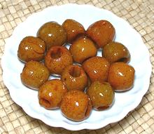
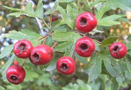
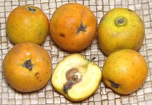
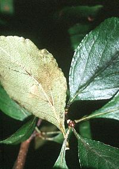
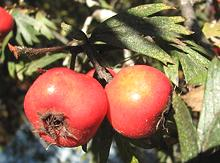
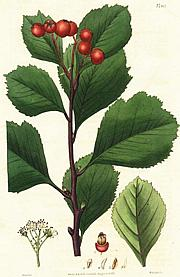
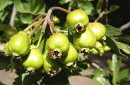
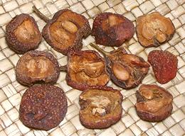
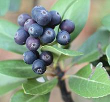

SAFARI
Users
General & History
Crataegus Hawthorns are native to temperate zones of Europe, Asia and North America. This genus is suspected to have about 200 species, but nobody knows for sure. Most of the edible hawthorns are in this genus. Young leaves can be picked in the spring and used in salads.
Rhaphiolepis Hawthorns are native to warm and subtropical regions of Asia, particularly China, Japan, Korea and northern parts of Cambodia, Thailand and Vietnam. This genus includes about 15 species. It is closely related to the Loquats - so closely hybrids exist. One that is well known is the Bronze Loquat, noted for "tasty but inedible fruit" (the flesh over the seeds is very thin).
Hawthorn produces very hard wood. It is the only proper wood from which to make effective vampire slaying stakes (Croatia, Serbia). It has many other magical properties as well.
In northwestern Europe hawthorn is associated with fairies, and it is considered bad luck to cut one down. Cutting down an old hawthorn to make way for its production facility has been proposed as the source of bad luck encountered by the De Lorean Motor Company. There are many other folklore associations with this small tree, including that it was used to make Jesus' crown of thorns.
Hawthorns, which grow throughout the temperate Northern Hemisphere, are particularly associated with spring, because many varieties bloom in May. Fruits and various other parts of the tree have long been used medicinally, notably for cardiac and digestive problems. Modern scientific study is being conducted with some early positive indications.
Varieties
Chinese Hawthorn
 [Shanzha (China), Crataegus pinnatifida]
Fruit from this small to medium tree is widely used in northern China, both for food and medicinal purposes. They are made into jams, jellies, candy, wine and other alcoholic beverages. Notable is the traditional "haw flakes", a dried fruit candy formed into a thin disk about 1 inch diameter.
The photo shows cored fruit from China that had been preserved in a
light syrup. About 0.9 inch diameter, they were mildly tart with a flavor
reminiscent of lightly cooked apple and pear.
Common Hawthorn
 [Haw; Crataegus monogyna]
This shrub or small tree is native to Europe, northwest Africa and
western Asia but has been introduced to many other parts of the world, where
it can easily become a pest. The fruits are about 0.4 inch diameter and are
edible raw, cooked or made into jams, jelly or fruit preserves. Flower petals
and young leaves are also edible. It is used medicinally to strengthen cardiac
function.
Photo by Elstro distributed under license Creative Commons
Attribution-Share Alike 3.0 Unported.
Tejocote
 [Mexican Hawthorn; Manzanita, Tejocotera; Crataegus mexicana]
Native to the mountains of Mexico and parts of Guatemala, this small tree has been introduced to other parts of the Andes range. In Mexico it is the main ingredient in ponche, the fruit punch served hot at Christmas and New Years. The flesh is fairly dry and lightly sweet. It tastes similar to apple, but more intense, sort of like partially dried apple. They are edible raw or cooked, but cooking brings out more flavor.The fruit is used as offerings to the dead and to make various types of candy. Roots and fruit are also used medicinally.
This fruit is very high in pectin, which is industrially extracted
for food, cosmetic, pharmaceutical and industrial uses.
The photo specimens, purchased from a large multi-ethnic market in
Los Angeles were up to 1.6 diameter 1.5 inches long and weighed just
over 1 ounce each, unusually large for tejocote. The fresh fruit is
still an exotic here, and these sold for 2014 US $7.49 / pound. I
have purchased somewhat smaller ones at a farmer's market at about
the same price.
Mayhaw
 [Eastern May Hawthorn; Crataegus aestivalis | Western May Hawthorn; Crataegus opaca]
Native to wet regions of the southeastern United States (C. aestivalis) and the Texas / Louisiana border region (C. opaca), the fruits of these small trees were formally harvested from shallow boats, but today this has declined due to destruction of wetlands. They are now being cultivated outside the wetlands making them more available.
The primary use of this fruit is the making of a jelly that is
considered a highly desirable delicacy in the region.
Photo by Robert H. Mohlenbrock for the U.S, Department
of Agriculture = Public Domain.
Oriental Hawthorn
 [Eastern Thorn, Silver Thorn Tree; Crataegus orientalis]
Native to the Mediterranean, Anatolia, Caucasus, Crimea and western Iran,
this hawthorn has larger fruits than most, up to 0.8 inch diameter. These
fruits are eaten raw, and in the Caucasus are baked in bread. This tree is
also used medicinally.
Photo by Melburnian distributed under license Creative Commons
Attribution-Share Alike 3.0 Unported.
Siberian Hawthorn
 [Redhaw Hawthorn, Crataegus sanguinea]
This hawthorn is native to Siberia, Mongolia, and the extreme north of
China. The fruits, about 0.4 inch diameter with up to 5 large seeds,
are eaten raw and cooked, and used to make jams, jellies and fruit
preserves.
Illustration copyright expired.
Azarole
 [Mosphilla, Mediterranean Medlar; Zalzalak (Iran); Crataegus azarolus]
This tree is native from the Mediterranean basin to Iran, where it is called
zalzalak, with the same name applied to a jam made from the fruit.
The photo is of unripe fruit, which, when mature, will be about 0.75 inch
diameter and red in color.
Photo by Cillas distributed under license Creative Commons
Attribution-Share Alike 3.0 Unported.
Yun Nan Shan Zha
 [Crataegus scabrifolia]
This hawthorn grows in wet mountain regions of southern China, mostly
Yunan, but a few in western Guizhou and southern Guangxi. Red or yellow
fruits are large for a hawthorn, up to 1 inch diameter, and sold fresh
in local markets. While the fruits are eaten, raw or cooked, its main
uses are medicinal, usually dried. It can be found in the medicinal herbs
sections of the large Asian markets here in Los Angeles. Hawthorn is used
mainly for lowering blood pressure and is sold by North American
supplement vendors.
Indian Hawthorn
 [Rhaphiolepis indica]
This shrub is native to southern China, Japan, Laos, Cambodia, Thailand
and Vietnam. It is commonly grown for its copious bright pink flowers,
but the fruit is edible when cooked, usually made into jam.
Photo by Cillas distributed under license Creative Commons
Attribution-Share Alike 3.0 Unported.